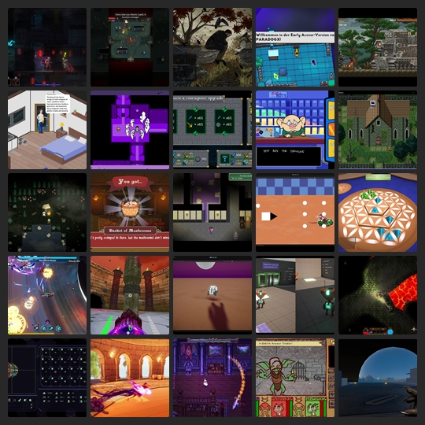

BlueSky Quick Recap #indiedev 2025-09-10
Show Only Saved Posts
Saved Post Num:
---
<< Previous
Home
Next >>

Time Range:
10 Sep 2025
Total Number of Post: 705+
Number of Post Displayed: 85
Post Selection Guidelines
<< Previous
Home
Next >>